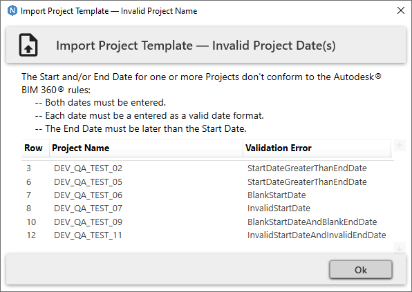
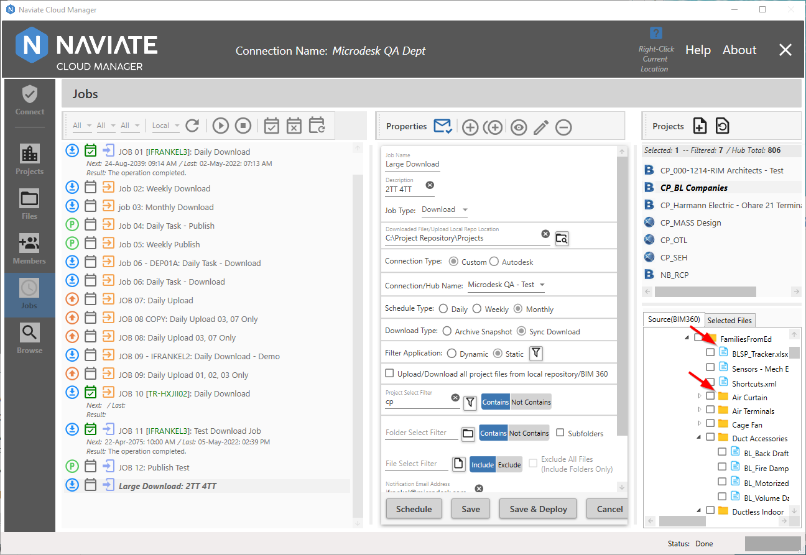
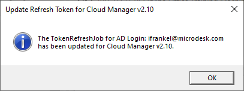
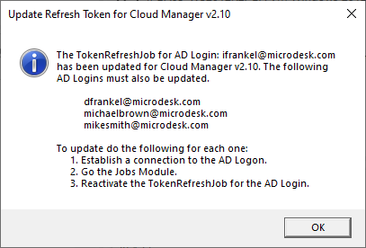

Resolved Issues
The following issues have been resolved in the v2.10 release.
The full details of each internal development release is included here for reference, but all the following are included in the v2.10.6 release.
The following issues have been resolved in the v2.10.4.1 release:
- BBL-741 Members: Switching between Hubs in Members was hanging up when user had invalid access rights. It was also crashing when various screen operations were performed, such as switching windows with the Hub List combo box dropdown list open. These issues have been resolved by preventing access to the Hub dropdown list from Members and requiring the user to go back to the Connect module, change the Hub there , then return to the Members module.
Please Note — This will be resolved in a future release so the use will be able to navigate to other modules directly from Members.
The following issues have been resolved in the v2.10.3.1 release:
- BBL-733: Members: Application was crashing when first accessed. This occurred when reading an ACC project due to a change in the underlying Autodesk® Forge API. Application now correctly handles this situation by skipping these projects altogether. Additionally, a label now displays at the top of the Members module screen, stating: Member Management functionality for ACC projects is currently pending from Autodesk.
The following issues have been resolved in the v2.10.3 release:
- BBL-625: Agent Configuration File: Renamed Agent configuration file settings for clarity and to avoid confusion. Retries has been renamed to NetworkTestRetriesMinutes and NetworkPause has been renamed to NetworkTestPause. Please refer to Agent Configuration for more information.
- BBL-565: Browse: Add an option to Publish Jobs to force publish if there were no syncs since last publish. Republish, refresh project, refresh sub folders
- BBL-576: Browse, Files: When adding projects to the Project Database from the Browse module using either the Update Project DB/Create Local Repo or the Update Naviate Cloud Manager Project Database operations, the application now automatically refreshes the Files module Project list to ensure the projects listed there reflect the new settings.
- BBL-542: Browse, Files, Jobs: Files are getting skipped when there is an updated file on BIM 360®. This was due to system not always properly recognizing different time zones. Issues has been corrected and implemented for following:
- Download Jobs
- Browse Downloads
- Upload Jobs
- Files Uploads
- BBL-574: Connect: Naviate Cloud Manager crashes if user attempts to switch to a hub (via dropdown) for which they are not a member. Application now handles the situation and presents a message window stating the user cannot connect because they are not a member.
- BBL-575: Connect: When creating a Custom Connection for a company with an & symbol in the name, the connection can not connect and throws an error. This has now been addressed and properly supports the & character.
- BBL-425: Connect, Jobs: Naviate Cloud Manager now removes leading and trailing spaces from the Name field when adding a Custom Connection or a Job definition.
- BBL-663: Connect: When logging off from an Autodesk® Connection using the Logout User button, the application was closing. This has been addressed and the application now correctly logs off the current logged on user from the Autodesk® Connection and is available for the next action — logon as a different Autodesk® User or logon with a Custom Connection.
- BBL-668: Connect: When first starting the app and connecting to an Autodesk® Connection, the Custom Connection Refresh button was disabled. This has been corrected and the button is now always available except when in add/edit mode.
- BBL-632: Connect: When a new user Naviate Cloud Manager first tries to connect to Autodesk® Hubs it does not show any hubs until Custom Connections are added. This issue has been addressed and the app now shows Autodesk® Hubs after initial Autodesk® Login.
- BBL-636: Connect: Disconnecting the Autodesk® Connection causes the Hub List to disappear. Now, when disconnecting from the current Autodesk® Connection, the current Hub list appears as expected.
- BBL-669: Connect: Unless a Custom Connection was selected from the display list, the Custom Connection Disconnect process failed after pressing the Disconnect button. This has been addressed and now the current Custom Connection can be addressed while the cursor/selection is anywhere else on the screen.
- BBL-657: Connect: When signing in with an Autodesk® Connection that does not have membership to any Hubs with the BIM 360 app integration — or the user has not been invited to any projects — Naviate Cloud Manager displayed an error message. Now, the application detects this situation and provides a dialog box explaining what the problem is and what has likely caused it. The dialog box also displays a link to the User Guide providing information on how to address the situation.
- BBL-332: Jobs: For Upload jobs, when selecting a project, verify the Upload File Repo Location is a parent folder for a subfolder containing the selected project. If not, produce a clear message stating what the precise issue is.
- BBL-661: Members: Main Help button was not properly accessing web help for the Members module and was bringing up the Windows Help instead.
- BBL-648: Members: Adding a new Project Member using a Custom Connection causes a crash when the Admin User doesn't have Project Admin permission.
The following issues have been resolved in the v2.10.2 release:
- BBL-479 -- Jobs: Enabled scroll bars for Selected Files display when browsing or viewing Jobs.
- BBL-528 -- Members: Addressed functionality issues when setting the Hub Members Select All check box button to all. Now, the application properly (with at least one project selected) enables the Import Project Members button. Likewise, when using the Select All checkbox to select all Project Members (with at least one project selected) it properly enables the Update Project Members button. Finally, when using the same check button to select Hub Members, it is now likewise enabling/disabling the Activate/Deactivate Hub Members buttons.
- BBL-532 -- Projects, Browse, Files: When users add one or more projects, the Browse module project list now clears out the project filter and selects all projects, allowing the new projects to be viewed. Also, when new projects are added, the app now clears out all Files selections and BIM 360® viewer data. Previously, new projects added from the Projects module were not readily available elsewhere in the app.
- BBL-312 -- Projects: Date validation has been added to verify the date entry and format prior to uploading new projects to BIM 360®.
- Both Start and End dates are required
- The End Date must come after the Start Date
- The date entered must be a valid date format, ideally conforming to the prescribed Autodesk® format of yyyy-MM-dd.
If any of the dates entered fail, the following dialog window appears:

- BBL-543 -- Files: When a BIM 360® project was displayed on the BIM 360® Projects / Files tree view and the project was then updated by uploading folders and files, the BIM 360® display was not updating when requested. Now, whenever the Display BIM 360® Hierarchy button is pressed, it clears all previous data from the tree view and performs a new search, displaying the current data from BIM 360®. This includes all data that has been most recently added or updated.
- BBL-544 -- Jobs: Added the Version/Release number to the beginning of the Jobs log file. This will assist support personnel in issue reporting and problem solving.
- BBL-524 -- Jobs: Increased the initial default width settings of both the Jobs listing and Job definition data columns. This affects new users who are running the application for the first time.
- BBL-559 -- Jobs: Removed the Warning: empty folders will not be created by download job message that occurred when saving Upload and Download type jobs with the Upload/Download all Project files from local repository/BIM 360 checkbox checked. It has been replaced by a more complete message that displays when the cursor is over the checkbox.
- BBL-559 -- Jobs: Also resolved issue where in view mode and the contents of only one project was displayed ,the vertical scroll bar was not appearing.
- BBL-501 -- Jobs: Previously resolved issue in both Files and Browse so the BIM 360® display was showed files followed by folders. However, the Jobs system was still displaying folders following by files.

This has now been resolved so that all BIM 360® displays in the system are the same — files followed by folders.
- BBL-310 -- Connect: Windows close button ('x' button at upper right of screen) was enabled, allowing user to break wizard workflow by pressing it to cancel.
- BBL-553 -- Members: Buttons on right became inaccessible or disappeared altogether when changing the size of middle column. This occurred when moving the middle column size bar to the left.
- BBL-551 -- Members: The application crashed when setting a Hub Member with Pending or Not Invited member. The problem is users with these statuses may not be changed via the Autodesk® APIs. Naviate Cloud Manager now detects when these have been requested and skips them, indicating they have been skipped in the logs.
- BBL-552 -- Members: Role list was not refreshing when changing from AD to Custom Connection for the same Hub. The system now only removes and rebuilds the Role list when a Hub has been changed, regardless of the connection type.
- BBL-556 -- Members: The Default Company dropdown box should always be enabled to support setting Default Company for Hub Members. Previously, the user had to select a project to enable the Default Company dropdown box, then deselect the the project to enable the Set Default Company button. This has been addressed and the Default Company dropdown list is now always enabled.
- BBL-557 -- Members: The Hub Members Selected for Current Project icon was not resetting when project was deselected. When the Hub Members tab is current and a project is selected, the project icon appears correctly for each Hub Member belonging to that project. However, when the project was deselected, the icon didn’t properly reset. This has now been addressed and the icon now disappears when projects are deselected.
The following issues have been resolved in the v2.10.1 release:
- BBL-497 -- Members: When Hub members were being activated, the log message incorrectly stated, "Hub Member Deactivate for User: john.smith@buildingsrus.com".
- BBL-500 -- Jobs: Upload: The number of projects selected did not match the number of projects displayed in the Source(Local) window and was always off by one.
- BBL-504 -- Jobs: Export was not functioning properly for projects located on an EU Hub.
- BBL-514 -- Jobs: The field label, “Upload/Download entire project from local repository/BIM 360" was changed to "Upload/Download all project files from local repository/BIM 360" to clarify exactly what it does. Additionally, added a popup that displays when checked further stating that no empty folders will be downloaded. Also added preceding message to the mouseover tool tip for the field.
- BBL-516 -- Jobs: When displaying Jobs Status, result code currently listed as N/A has been changed to the following: “Operation completed but error sending Email notification.”
- [BBL-516] -- Note for Naviate internal users: Jobs: Removed automatic creation of email configuration when Jobs was accessed and email configuration was empty. Please reach out to the Naviate Cloud Manager Product Owner or Product Manager to receive the correct settings.
- BBL-521 -- Replace pre-v2.10 refresh tokens with refresh tokens compatible with version v2.10. This task is performed automatically the first time the user logs onto Naviate Cloud Manager after performing the installation. The update is performed for both the application logon and for the TokenRefreshJob for the same login if one exists. After the update has been performed, one of the following two messages appear.
The following message appears when there is just the one, single login used for both application and job login and no additional job logins:

The following message appears when more than one AD Login is in use for deployed jobs:

- BBL-525 -- Added Region support to all of the new internal, proprietary API calls.